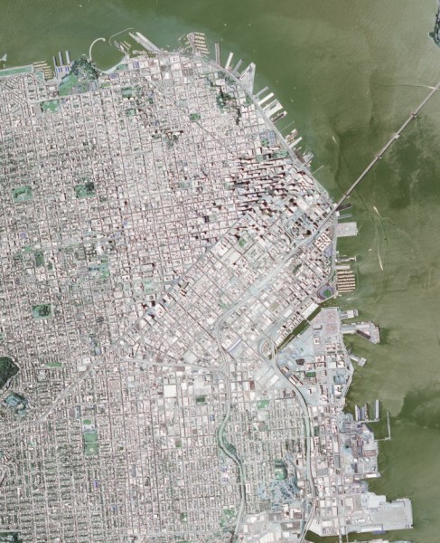

Reading Geospatial Raster files with GDAL
Geospatial raster data is a heavily used product in Geographic Information Systems and Photogrammetry. Raster data typically can represent imagery and Digital Elevation Models (DEM). The standard library for loading GIS imagery is the Geographic Data Abstraction Library (GDAL). In this example, we will show techniques for loading GIS raster formats using native OpenCV functions. In addition, we will show some an example of how OpenCV can use this data for novel and interesting purposes.
Goals
The primary objectives for this tutorial:
- How to use OpenCV imread to load satellite imagery.
- How to use OpenCV imread to load SRTM Digital Elevation Models
- Given the corner coordinates of both the image and DEM, correllate the elevation data to the image to find elevations for each pixel.
- Show a basic, easy-to-implement example of a terrain heat map.
- Show a basic use of DEM data coupled with ortho-rectified imagery.
To implement these goals, the following code takes a Digital Elevation Model as well as a GeoTiff image of San Francisco as input. The image and DEM data is processed and generates a terrain heat map of the image as well as labels areas of the city which would be affected should the water level of the bay rise 10, 50, and 100 meters.
Code
/* * gdal_image.cpp -- Load GIS data into OpenCV Containers using the Geospatial Data Abstraction Library */ // OpenCV Headers #include "opencv2/core.hpp" #include "opencv2/imgproc.hpp" #include "opencv2/highgui.hpp" // C++ Standard Libraries #include <cmath> #include <iostream> #include <stdexcept> #include <vector> using namespace std; // define the corner points // Note that GDAL library can natively determine this cv::Point2d tl( -122.441017, 37.815664 ); cv::Point2d tr( -122.370919, 37.815311 ); cv::Point2d bl( -122.441533, 37.747167 ); cv::Point2d br( -122.3715, 37.746814 ); // determine dem corners cv::Point2d dem_bl( -122.0, 38); cv::Point2d dem_tr( -123.0, 37); // range of the heat map colors std::vector<std::pair<cv::Vec3b,double> > color_range; // List of all function prototypes cv::Point2d lerp( const cv::Point2d&, const cv::Point2d&, const double& ); cv::Vec3b get_dem_color( const double& ); cv::Point2d world2dem( const cv::Point2d&, const cv::Size&); cv::Point2d pixel2world( const int&, const int&, const cv::Size& ); void add_color( cv::Vec3b& pix, const uchar& b, const uchar& g, const uchar& r ); /* * Linear Interpolation * p1 - Point 1 * p2 - Point 2 * t - Ratio from Point 1 to Point 2 */ cv::Point2d lerp( cv::Point2d const& p1, cv::Point2d const& p2, const double& t ){ return cv::Point2d( ((1-t)*p1.x) + (t*p2.x), ((1-t)*p1.y) + (t*p2.y)); } /* * Interpolate Colors */ template <typename DATATYPE, int N> cv::Vec<DATATYPE,N> lerp( cv::Vec<DATATYPE,N> const& minColor, cv::Vec<DATATYPE,N> const& maxColor, double const& t ){ cv::Vec<DATATYPE,N> output; for( int i=0; i<N; i++ ){ output[i] = (uchar)(((1-t)*minColor[i]) + (t * maxColor[i])); } return output; } /* * Compute the dem color */ cv::Vec3b get_dem_color( const double& elevation ){ // if the elevation is below the minimum, return the minimum if( elevation < color_range[0].second ){ return color_range[0].first; } // if the elevation is above the maximum, return the maximum if( elevation > color_range.back().second ){ return color_range.back().first; } // otherwise, find the proper starting index int idx=0; double t = 0; for( int x=0; x<(int)(color_range.size()-1); x++ ){ // if the current elevation is below the next item, then use the current // two colors as our range if( elevation < color_range[x+1].second ){ idx=x; t = (color_range[x+1].second - elevation)/ (color_range[x+1].second - color_range[x].second); break; } } // interpolate the color return lerp( color_range[idx].first, color_range[idx+1].first, t); } /* * Given a pixel coordinate and the size of the input image, compute the pixel location * on the DEM image. */ cv::Point2d world2dem( cv::Point2d const& coordinate, const cv::Size& dem_size ){ // relate this to the dem points // ASSUMING THAT DEM DATA IS ORTHORECTIFIED double demRatioX = ((dem_tr.x - coordinate.x)/(dem_tr.x - dem_bl.x)); double demRatioY = 1-((dem_tr.y - coordinate.y)/(dem_tr.y - dem_bl.y)); cv::Point2d output; output.x = demRatioX * dem_size.width; output.y = demRatioY * dem_size.height; return output; } /* * Convert a pixel coordinate to world coordinates */ cv::Point2d pixel2world( const int& x, const int& y, const cv::Size& size ){ // compute the ratio of the pixel location to its dimension double rx = (double)x / size.width; double ry = (double)y / size.height; // compute LERP of each coordinate cv::Point2d rightSide = lerp(tr, br, ry); cv::Point2d leftSide = lerp(tl, bl, ry); // compute the actual Lat/Lon coordinate of the interpolated coordinate return lerp( leftSide, rightSide, rx ); } /* * Add color to a specific pixel color value */ void add_color( cv::Vec3b& pix, const uchar& b, const uchar& g, const uchar& r ){ if( pix[0] + b < 255 && pix[0] + b >= 0 ){ pix[0] += b; } if( pix[1] + g < 255 && pix[1] + g >= 0 ){ pix[1] += g; } if( pix[2] + r < 255 && pix[2] + r >= 0 ){ pix[2] += r; } } /* * Main Function */ int main( int argc, char* argv[] ){ /* * Check input arguments */ if( argc < 3 ){ cout << "usage: " << argv[0] << " <image_name> <dem_model_name>" << endl; return -1; } // load the image (note that we don't have the projection information. You will // need to load that yourself or use the full GDAL driver. The values are pre-defined // at the top of this file cv::Mat image = cv::imread(argv[1], cv::IMREAD_LOAD_GDAL | cv::IMREAD_COLOR ); // load the dem model cv::Mat dem = cv::imread(argv[2], cv::IMREAD_LOAD_GDAL | cv::IMREAD_ANYDEPTH ); // create our output products cv::Mat output_dem( image.size(), CV_8UC3 ); cv::Mat output_dem_flood( image.size(), CV_8UC3 ); // for sanity sake, make sure GDAL Loads it as a signed short if( dem.type() != CV_16SC1 ){ throw std::runtime_error("DEM image type must be CV_16SC1"); } // define the color range to create our output DEM heat map // Pair format ( Color, elevation ); Push from low to high // Note: This would be perfect for a configuration file, but is here for a working demo. color_range.push_back( std::pair<cv::Vec3b,double>(cv::Vec3b( 188, 154, 46), -1)); color_range.push_back( std::pair<cv::Vec3b,double>(cv::Vec3b( 110, 220, 110), 0.25)); color_range.push_back( std::pair<cv::Vec3b,double>(cv::Vec3b( 150, 250, 230), 20)); color_range.push_back( std::pair<cv::Vec3b,double>(cv::Vec3b( 160, 220, 200), 75)); color_range.push_back( std::pair<cv::Vec3b,double>(cv::Vec3b( 220, 190, 170), 100)); color_range.push_back( std::pair<cv::Vec3b,double>(cv::Vec3b( 250, 180, 140), 200)); // define a minimum elevation double minElevation = -10; // iterate over each pixel in the image, computing the dem point for( int y=0; y<image.rows; y++ ){ for( int x=0; x<image.cols; x++ ){ // convert the pixel coordinate to lat/lon coordinates cv::Point2d coordinate = pixel2world( x, y, image.size() ); // compute the dem image pixel coordinate from lat/lon cv::Point2d dem_coordinate = world2dem( coordinate, dem.size() ); // extract the elevation double dz; if( dem_coordinate.x >= 0 && dem_coordinate.y >= 0 && dem_coordinate.x < dem.cols && dem_coordinate.y < dem.rows ){ dz = dem.at<short>(dem_coordinate); }else{ dz = minElevation; } // write the pixel value to the file output_dem_flood.at<cv::Vec3b>(y,x) = image.at<cv::Vec3b>(y,x); // compute the color for the heat map output cv::Vec3b actualColor = get_dem_color(dz); output_dem.at<cv::Vec3b>(y,x) = actualColor; // show effect of a 10 meter increase in ocean levels if( dz < 10 ){ add_color( output_dem_flood.at<cv::Vec3b>(y,x), 90, 0, 0 ); } // show effect of a 50 meter increase in ocean levels else if( dz < 50 ){ add_color( output_dem_flood.at<cv::Vec3b>(y,x), 0, 90, 0 ); } // show effect of a 100 meter increase in ocean levels else if( dz < 100 ){ add_color( output_dem_flood.at<cv::Vec3b>(y,x), 0, 0, 90 ); } }} // print our heat map cv::imwrite( "heat-map.jpg" , output_dem ); // print the flooding effect image cv::imwrite( "flooded.jpg", output_dem_flood); return 0; }
How to Read Raster Data using GDAL
This demonstration uses the default OpenCV imread function. The primary difference is that in order to force GDAL to load the image, you must use the appropriate flag.
cv::Mat image = cv::imread(argv[1], cv::IMREAD_LOAD_GDAL | cv::IMREAD_COLOR );
When loading digital elevation models, the actual numeric value of each pixel is essential and cannot be scaled or truncated. For example, with image data a pixel represented as a double with a value of 1 has an equal appearance to a pixel which is represented as an unsigned character with a value of 255. With terrain data, the pixel value represents the elevation in meters. In order to ensure that OpenCV preserves the native value, use the GDAL flag in imread with the ANYDEPTH flag.
// load the dem model cv::Mat dem = cv::imread(argv[2], cv::IMREAD_LOAD_GDAL | cv::IMREAD_ANYDEPTH );
If you know beforehand the type of DEM model you are loading, then it may be a safe bet to test the Mat::type() or Mat::depth() using an assert or other mechanism. NASA or DOD specification documents can provide the input types for various elevation models. The major types, SRTM and DTED, are both signed shorts.
Notes
Lat/Lon (Geographic) Coordinates should normally be avoided
The Geographic Coordinate System is a spherical coordinate system, meaning that using them with Cartesian mathematics is technically incorrect. This demo uses them to increase the readability and is accurate enough to make the point. A better coordinate system would be Universal Transverse Mercator.
Finding the corner coordinates
One easy method to find the corner coordinates of an image is to use the command-line tool gdalinfo. For imagery which is ortho-rectified and contains the projection information, you can use the USGS EarthExplorer.
\f$> gdalinfo N37W123.hgt Driver: SRTMHGT/SRTMHGT File Format Files: N37W123.hgt Size is 3601, 3601 Coordinate System is: GEOGCS["WGS 84", DATUM["WGS_1984", ... more output ... Corner Coordinates: Upper Left (-123.0001389, 38.0001389) (123d 0' 0.50"W, 38d 0' 0.50"N) Lower Left (-123.0001389, 36.9998611) (123d 0' 0.50"W, 36d59'59.50"N) Upper Right (-121.9998611, 38.0001389) (121d59'59.50"W, 38d 0' 0.50"N) Lower Right (-121.9998611, 36.9998611) (121d59'59.50"W, 36d59'59.50"N) Center (-122.5000000, 37.5000000) (122d30' 0.00"W, 37d30' 0.00"N) ... more output ...
Results
Below is the output of the program. Use the first image as the input. For the DEM model, download the SRTM file located at the USGS here. http://dds.cr.usgs.gov/srtm/version2_1/SRTM1/Region_04/N37W123.hgt.zip
